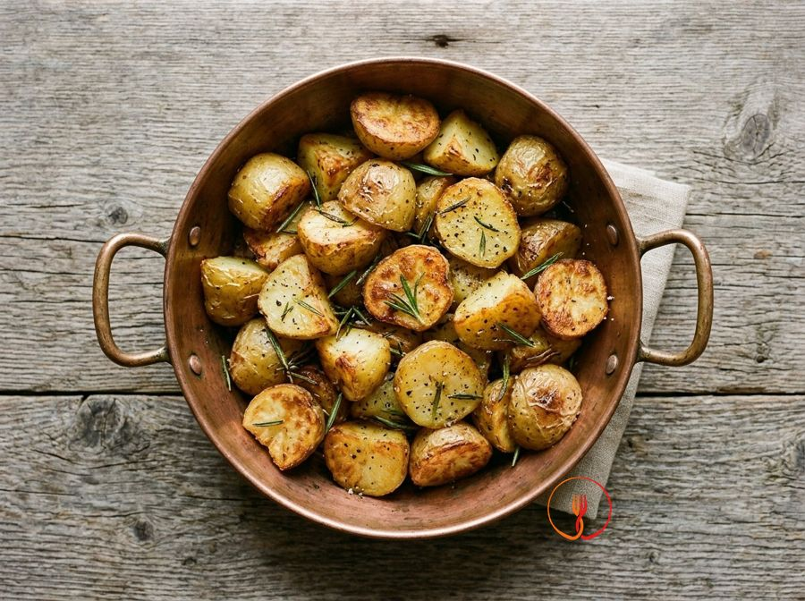

Rosemary Roast Potatoes
Crispy on the outside and fluffy on the inside, these roast potatoes are seasoned with rosemary and extra virgin olive oil.
Potatoes that are crispy on the outside and tender inside, seasoned with fresh rosemary sprigs. The initial parboiling technique helps achieve even browning and the perfect texture in the oven. A versatile and popular side dish, ideal for any occasion.
Ingredients
- Potatoes1000 g
- Extra virgin olive oil50 g
- Fresh rosemary5 g
- Fine salt7 g
- Ground black pepper0.5 g
- Water (for parboiling)3000 ml
Allergens
None of the 14 main allergens in the ingredients.
Method
- Preheat the fan oven to 200 °C.
- Peel the potatoes and cut them into wedges or roughly 3 cm chunks.
- Rinse them in cold water to remove excess starch.
- Parboil them in salted water for 5 minutes, then drain well.
- Leave them to dry for 5 minutes in the colander, shaking them to roughen the edges.
- Strip the rosemary needles from the sprig.
- Arrange the potatoes in a large roasting tin in a single layer, without overlapping them.
- Season with oil, rosemary, salt and pepper, mixing with your hands.
- Roast for 40-45 minutes, turning them twice, until they are golden and crispy.
- Serve hot.
Tips
- Dry the potatoes thoroughly after parboiling to encourage the formation of a crunchy crust.
- Do not overlap the potatoes in the baking tray so the heat can circulate evenly.
- Gently shake the tray halfway through cooking instead of using a spoon to avoid breaking the pieces.
Variations
- Add unpeeled garlic cloves to the tray for a more rustic and intense aroma.
- Sprinkle with a mix of chopped sage and thyme along with the rosemary for a more complex herbal profile.
Nutrition facts (estimate)
| Per serving (202 g) | Per 100 g | |
|---|---|---|
| Energy | 1268 kJ / 303 kcal | 628 kJ / 150 kcal |
| Protein | 5.0 g | 2.5 g |
| Carbohydrates | 42 g | 21 g |
| of which sugars | 2.0 g | 1.0 g |
| Fat | 13 g | 6.3 g |
| of which saturates | 1.8 g | 0.9 g |
| Fibre | 5.5 g | 2.7 g |
| Salt | 1.8 g | 0.9 g |
AI estimates based on average CREA / USDA data: indicative only, not a substitute for medical or dietitian advice.
Open the recipe in the app for the shopping list, ingredient sheets and nearby shops.